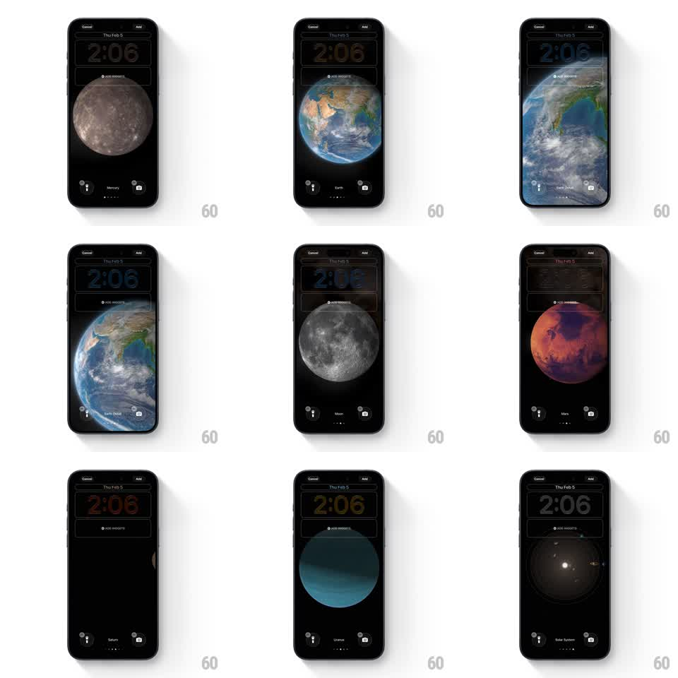

Media
Frame-by-frame

Rebuild this interaction 1:1: iOS' astronomy wallpaper picker - swiping pages through 3D planets (Mercury, Venus, Earth, Moon, Mars, Saturn, Neptune) that morph into each other while the clock's color adapts to each planet.

Rebuild this interaction 1:1: iOS' astronomy wallpaper picker - swiping pages through 3D planets (Mercury, Venus, Earth, Moon, Mars, Saturn, Neptune) that morph into each other while the clock's color adapts to each planet. ## Integration Integration: stack-agnostic spec - springs given as stiffness/damping, timed motions as duration + curve; map every value to your framework and animation library of choice. ## Scene The lock-screen customization preview, black: Cancel / Add top corners, the date and a giant clock (2:06), an ADD WIDGETS box, the planet render center, and at the bottom the flashlight/camera buttons with the planet name and page dots between them. ## Motion spec Pattern: paged 3D planet carousel with color-matched UI. - Horizontal swipe pages planets with 1:1 tracking: the current planet rotates and recedes (rotateY up to 60 degrees, scale 1 -> 0.7) as the next one grows in from the edge (scale 0.7 -> 1), the two passing like spheres in space, not a slide. - Mid-transition the spheres crossfade their textures softly (the last 30% of the drag) so the morph feels continuous. - The clock's color tweens to a hue sampled from the incoming planet (blue for Earth/Neptune, rust for Mars, pale grey for the Moon) over 400ms after the page settles. - The planet name label rolls to the new name (vertical, 200ms) and the page dots advance. - On release the page snaps with a spring (~300/20); the planet then idles with a very slow self-rotation (30s per turn). ## Calibration - Planets are lit consistently (key light from one side) so the rotation reads as one object in one space. - The clock color is muted - a tint of the planet, never a saturated match. ## Reduced motion Planets crossfade (300ms); clock color tweens (400ms). ## Don't miss - Saturn's rings stay attached through the morph - they tilt with the sphere, not fade separately. - The name/dots row is the only chrome that changes besides the clock - flashlight and camera stay put.